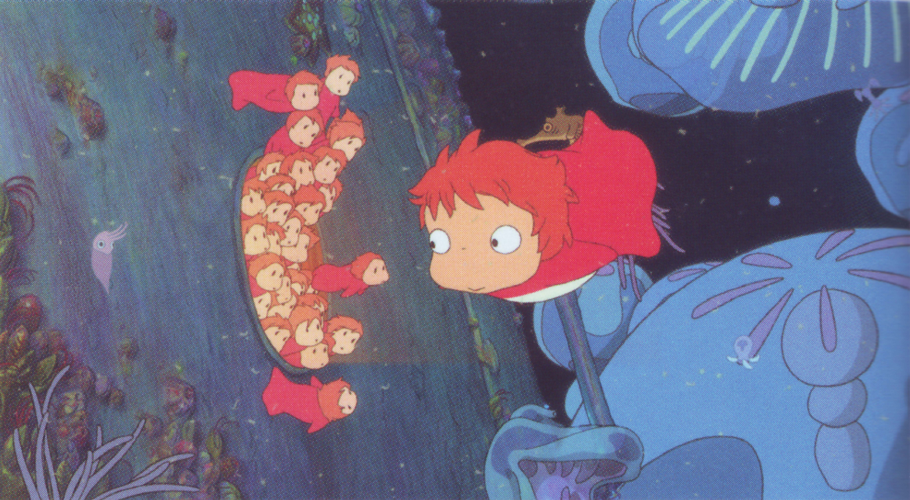

<!DOCTYPE html>
<html lang="en">
<head>
  <meta charset="UTF-8">
  <meta name="viewport" content="width=device-width, initial-scale=1.0">
  <title>Ponyo/title>
  <link rel="icon" href="img/icon.png" type="image/png">
  <link rel="stylesheet" href="style/nav.css">
  <link rel="stylesheet" href="style/shared_movies.css">
  <link href="https://fonts.googleapis.com/css2?family=Oswald:wght@400;500;700&display=swap" rel="stylesheet">
  <link href="https://fonts.googleapis.com/css2?family=Roboto:wght@400;700&display=swap"" rel='stylesheet'>

</head>
  <body>
    <div id="navbar-placeholder"></div>
    <main>
      <div class="banner">
        <div class="imgBanner">
          
          <div class="text">
            <h1>PONYO</h1>        
          </div>
        </div>
      </div>
    </main>
    <section class="galleryBanner">
      <div class="gallery">
        <div class="slides">
          <div class="slide">
            
          </div>
          <div class="slide">
            
          </div>
          <div class="slide">
            
          </div>
          <div class="slide">
            
          </div>
          <div class="slide">
            
          </div>
          <div class="slide">
            
          </div>
          <div class="slide">
            
          </div>
          <div class="slide">
            
          </div>
          <div class="slide">
            
          </div>
        </div>
      </div>
    </section>
    <hr>
    <div class="container">
      <section class="sectionSinopse">
        <div class="sinopseInfFrame">
          <div class="frameSinopse">
            <iframe width="1600" height="695" src="https://www.youtube.com/embed/CsR3KVgBzSM" title="Ponyo - Official Trailer" frameborder="0" allow="accelerometer; autoplay; clipboard-write; encrypted-media; gyroscope; picture-in-picture; web-share" referrerpolicy="strict-origin-when-cross-origin" allowfullscreen></iframe>
          </div>
          <div class="sinopseInf">
            <h2> SINOPSE </h2>
            <p> Ponyo conta a história de uma pequena criatura marinha mágica que sonha em se tornar humana. Ponyo, uma peixinha com rosto de menina, escapa de seu lar no oceano e é resgatada por Sosuke, um garoto de cinco anos que vive em um vilarejo costeiro. Ao se tornarem amigos, Ponyo usa sua magia para se transformar em humana, mas suas ações desequilibram o mundo natural, provocando uma série de acontecimentos que ameaçam a harmonia entre o mar e a terra
            </p>
            <p> Agora, Sosuke e Ponyo precisam se unir para restaurar o equilíbrio e proteger seu vilarejo. Com uma animação visualmente deslumbrante e uma narrativa que evoca contos de fadas clássicos, Ponyo explora temas de amizade, respeito à natureza e o poder da imaginação.
            </p>
          </div>
        </div>
      </section>
      <hr>
      <section class="sectionData">
        <div class="dadosTitBut">
          <h2> Dados técnicos </h2>
          <div class="button">
            <a href="https://www.justwatch.com/br/filme/a-viagem-de-chihiro">
              <button type="submit"> Onde assitir <i class="fa-solid fa-chevron-right" style="color: #ffffff;"></i></button>
            </a>
          </div>
        </div>
        <div class="dataLine">
           <div class="dataCard">
            <h4> Direção </h4>
            <p> Hayao Miyazaki</p>
          </div>
          <div class="dataCard">
            <h4> Produção </h4>
            <p>Toshio Suzuki</p>
          </div> 
          <div class="dataCard">
            <h4> Música </h4>
            <p>Joe Hisaishi</p>
          </div> 
          <div class="dataCard">
            <h4> Edição </h4>
            <p>Takeshi Seyama</p>
          </div> 
          <div class="dataCard">
            <h4> Lançamento </h4>
            <p>19 de julho de 2008 </p>
          </div> 
          <div class="dataCard">
            <h4> Gênero </h4>
            <p>Animação</p>
          </div> 
      </div>
      </section>
      <hr>
    </div>

    <div id="footer-placeholder"></div>
    <script src="script/load_component.js"></script>
    <script src="https://kit.fontawesome.com/62e11c2144.js" crossorigin="anonymous"></script>
  </body>
</head>

